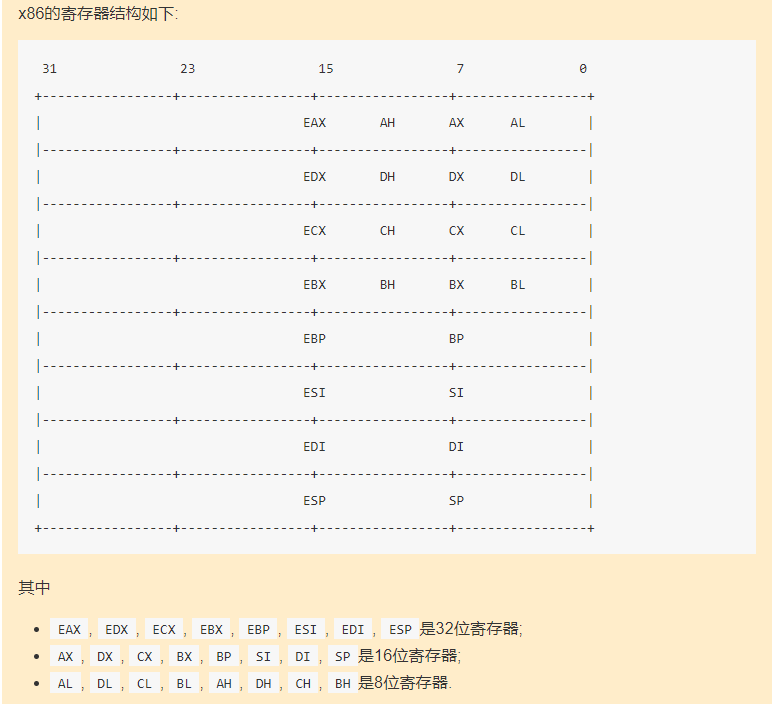
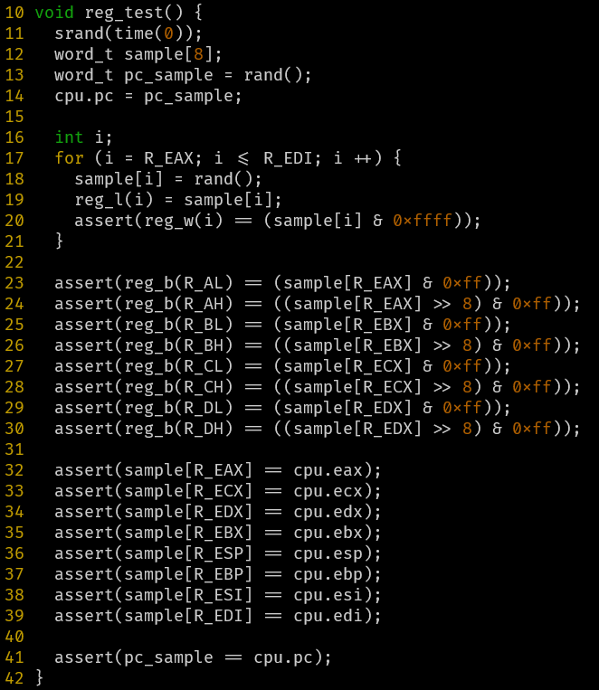
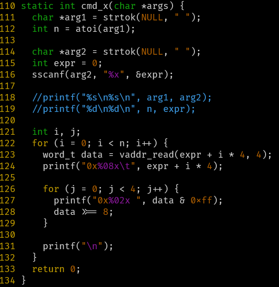
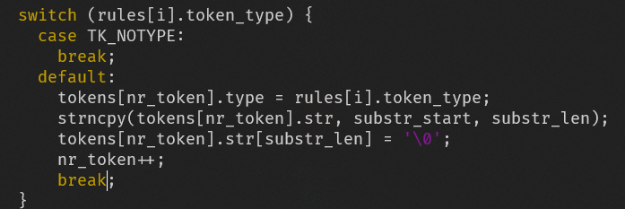
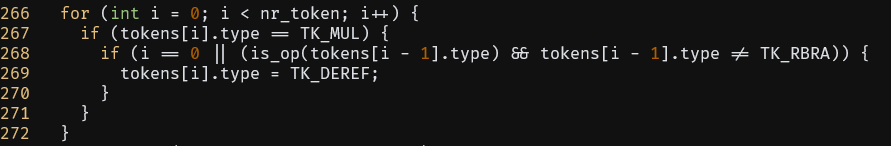
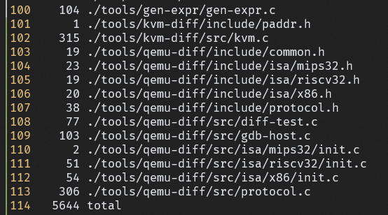

填坑
PA1 - 开天辟地的篇章：最简单的计算机
实现x86的寄存器
很关键的一张图

1 | typedef struct { |
希望下面的每一个寄存器（eax…）能和上面结构体中的结构进行对应
x86寄存器的这种结构很适合用union来表达
1 | typedef struct { |
reg_test()是如何测试你的实现的?

reg_l,reg_w,reg_b是/nemu/src/isa/x86/local-include/reg.h定义的三个宏，分别对应32位、16位、8位寄存器
给每一个32位寄存器赋一个随机值，然后依次检查其低16位低8位的值，最后检查pc
在cmd_c()函数中, 调用cpu_exec()的时候传入了参数-1, 你知道这是什么意思吗?
循环for (; n > 0; n--)，传入-1使得这个循环总是成立，所以会执行完全部的指令
完善调试器
单步执行
1 | static int cmd_si(char *args) { |
打印寄存器
1 | static int cmd_info(char *args) { |
1 | void isa_reg_display() { |
扫描内存

注意要#include "../../../include/memory/vaddr.h"
PA1第一阶段到此结束
表达式求值
实现算术表达式的词法分析
RTFC找到这部分的执行逻辑
表达式求值相关代码位于/home/leyan/ics2020/nemu/src/monitor/debug/expr.c，在./ui.c中#include "expr.h"，./expr.h中只有一个函数声明word_t expr(char*, char*)，也就是说在./ui.c中所有表达式求值的功能都由expr()这个函数来进行。
词法分析的任务相对简单，只需要把token类型写进枚举中，rule数组中存放由正则表达式和类型组成的规则
对表达式进行匹配的部分框架已经写好了，只需要对于识别出的token一次扔到tokens数组中即可，有些特殊的token需要特殊处理，例如TK_NOTYPE，表示空格，空格在词法解析中会被忽略，因此直接break就行。

这里有一个小坑就是strncpy不会包含最后的\0，需要手动加上。
实现算术表达式的递归求值
递归求值的部分文档里写的很清晰，只要填框架就行了，目前没有发现坑。
实现表达式生成器
这一部分的代码在/nemu/tools/gen-expr.c中，大体的思路就是先生成表达式字符串，在把它塞进这样一个C语言代码字符串里：
1 | "#include <stdio.h>\n" |
然后输出到文件里，调用gcc编译运行并获得输出结果。
一些细节：
- 如何保证表达式进行无符号运算?
- 先进行有符号运算最后转成无符号数
- 如何生成长表达式, 同时不会使
buf溢出?- 设定一个上限，超过了就返回
- 如何过滤求值过程中有除0行为的表达式?
- 调用gcc的时候把所有警告视为错误，这样
system的返回值不为零，就不会写进文件里
- 调用gcc的时候把所有警告视为错误，这样
有了表达式生成器就可以测试之前的递归求值了
PA1阶段2到此结束
监视点
监视点的功能是监视一个表达式的值何时发生变化。
扩展算数表达式求值功能
1 | <expr> ::= <decimal-number> |
这个部分硬写就行，重点是单目运算符的实现，框架中给出了思路，在正则匹配的阶段是无法区分乘号*和解引用*的，需要在识别出token之后，求值之前，把解引用标识出来
解引用是单目运算，因此左边不能是数字或右括号
在寻找主运算符的过程中，要注意单目运算符的优先级高，找主运算符时应该跳过
负数的处理也类似

实现监视点
监视点池就是一个链表，注意删除的时候判断空，否则会触发段错误
没什么好说的，就是一些链表操作、
调试的建议
- 总是使用
-Wall和-Werror - 尽可能多地在代码中插入
assert() assert()无法捕捉到error时, 通过printf()输出可疑的变量, 期望能观测到errorprintf()不易观测error时, 通过GDB理解程序的精确行为
断点的工作原理
在PA中可以用w pc == ADDR来模拟断点，但是这样会影响效率
How debuggers work: Part 2 - Breakpoints
这篇文章介绍了GDB打断点的原理，简要概括如下：
- 断点通过软中断（trap / software interrupts）实现
- 发生中断时，CPU会保存当前的状态，跳转到一个事先确定的处理相应中断的程序的位置
- 硬件中断和软件中断都是如此
- 断点通过一种特殊的trap——
int3来实现- 这里的
int不是类型，而是x86对于trap指令的一种术语，指的是对预先定义的处理程序的调用，interrupt int指令可以跟一个8位的操作数，这个操作数表明了中断的编号，理论上可以有$2^8 = 256$种中断，我们关心的中断是三号中断int3int3称为trap to debugger
- 这里的
- 当进程执行
int3指令时，OS会停止当前的进程，并向他发送一个SIGTRAP信号
思考题：
- x86的
int3指令不带任何操作数, 操作码为1个字节, 因此指令的长度是1个字节. 这是必须的吗? 假设有一种x86体系结构的变种my-x86, 除了int3指令的长度变成了2个字节之外, 其余指令和x86相同. 在my-x86中, 上述文章中的断点机制还可以正常工作吗? 为什么?
如何阅读手册
查阅手册回答
- EFLAGS寄存器中的CF位是什么意思?
- ModR/M字节是什么?
- mov指令的具体格式是怎么样的?
统计代码行数
1 | find ./ -name "*.[ch]" | xargs wc -l > statistic |

PA1到此结束